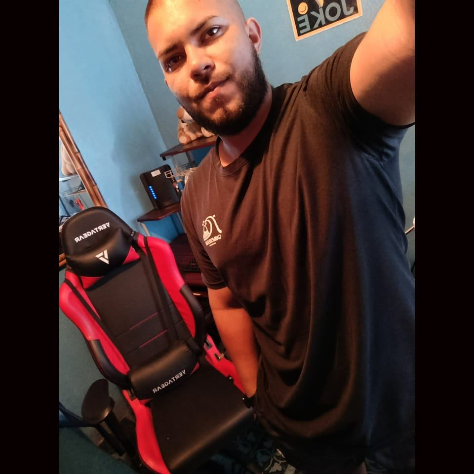

Desarrollador TI · Bases de Datos · Big Data
Soy estudiante de Tecnologías de la Información y Big Data en el Colegio Universitario de Cartago (CUC), con interés en el desarrollo de software, bases de datos y análisis de datos.
Colegio Universitario de Cartago (CUC)
Último cuatrimestre – En cursoColegio Universitario de Cartago (CUC)
4.º cuatrimestre – En cursoFormación en academia de tecnologías UCR
Nivel avanzado – último nivel cursado3 cursos completados
Universidad de Costa Rica (UCR)
Continuar creciendo como profesional en TI y Big Data.
Desarrollarme profesionalmente y liderar proyectos tecnológicos.
📞 6118-4904 | 6016-9907